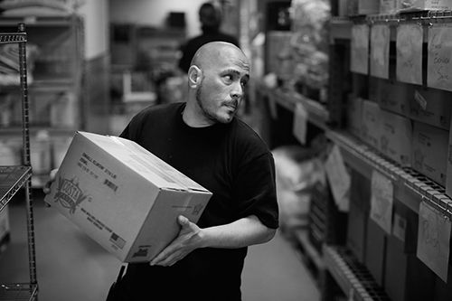

Portraits of life on SF's streets
These portraits provide glimpses into the lives of 12 people whose experiences help tell the story of the streets.
June 28, 2016
-

- 
Deanna Daly
The little things are a challenge when you live on the streets. There’s no microwave or stove; no refrigerator; no washer and dryer; no escape from the noise. And, of course, there’s no bathroom. It’s hard to find a job — especially without a car or identification — two things that Deanna Daly, 31, doesn’t have. “There’s a lot of things you have to do to survive. Every little thing is like work.”
John White
John White (left) moved to Division Street with Ariel Young (right) in April, when only a few people were camping there. White, 51, says it got a little crowded and then thinned out, but now there’s no space on the sidewalk. Young is pregnant, and the two are trying to find a place to live.
David Tompkins
The temporary homeless shelter at Pier 80 was a place for David Tompkins to find himself again. “People say I’m changing, but I’m not really changing. When you’re out there, you become something you’re not,” says Tompkins, 56. “I’m becoming me again.” The shelter allowed him to bring his dog, provided him access to a clinic and a place to sleep, and helped him get the care that he needed.
Christine Boyer
“People around here are great,” says Christine Boyer, 52. “They are very forgiving, and they help us every day — I mean every day. It’s just a normal living. Even though we don’t live in a house, it still feels more normal than it did” when her family was at an encampment on Potrero Avenue and Cesar Chavez Street. Her family now stays in the Financial District. “I keep a sign on our cart that says we’re a homeless family with a disabled son and that we need food and blankets and clothing and stuff, and there’s always little surprise gift bags outside our cart when we get up in the mornings. Sometimes shoes, sometimes blankets, clothes — most of the time food. And there’s always at least one person a day that comes by and drops off a $20 bill.”
Donald Abel
“I decided I'm not going to die in the streets. I'm going to trust in the system and give Pier 80 a try,” said Donald Abel, 60. Pier 80 is a temporary homeless shelter that the city set up in February. It allows people to stay with their partners, pets and belongings, and case managers visit residents daily. The shelter is expected to close July 1.
Erik Otten
Erik Otten lost his job, his family, his home. “I was stripped of everything, and I was spit out into being homeless.” That’s how he found St. Anthony’s, a social services organization that helps the poor. He arrived there alone, struggling with sobriety. He recalls standing in line at St. Anthony’s Dining Room in the Tenderloin and seeing a woman carrying a Winnie the Pooh stuffed animal. “I remember staring at the animal like, ‘Damn, what happened, man?’ I missed my wife; she was my best friend. I loved my job, I lost it. ... Loved my family, lost that. Had a house, lost.” Nearly five years later — and now an employee at St. Anthony’s — he saw the same woman in line. “I just got the chills, like God ran through me, like, ‘Yeah, you’re on the other side.’”
Alberto Terrell
“It’s difficult being homeless,” says Alberto Terrell, 55. “I have medical problems and I needed a new pair of shoes, and that is the honest-to-God truth. It’s hard, but you know what, if you try to at least go to some of the places that will help you, you feel a little better. ... It’s good because I have a quarter of a bone missing in my leg, so new shoes help me balance because I have a lift in my left leg. It will be very helpful, and I really appreciate it.”
Ashley Moore-Motte
As a nurse, Ashley Moore-Motte, 32, would work with patients for 12 hours and never see them again. But she wanted more. She wanted to know her patients and understand the challenges they faced. Moore-Motte is a primary-care nurse for UCSF and works at Rene Cazenave Apartments, which provides supportive services for the formerly chronically homeless. “With a place like this, I get to make connections with people over time: see them grow, see them fall, and really be a part of a family,” she says. “Having stable food, clothing and shelter makes it so that you can start to actually pay attention to your health and your well-being.”
Annice Jacoby
Annice Jacoby was walking down Mission Street on a gorgeous day, and sprawled on the sidewalk was a man, passed out and surrounded by broken glass. “I was horrified that he was going to roll over and cut himself, and there were dozens of people just walking around him and that was so disturbing. I picked up the glass and I had this thought that I wanted him under cover. I wanted him protected,” she said. That’s how she came up with the idea of Undercover, which provides blankets to people on the streets with messages that call attention to homelessness. “This is something that we can fix. The opportunity and the challenge is to the whole city to use our creativity and ingenuity to address this, not in 10-year plans but immediately,” Jacoby said.
Jose Bernal
Housing is often the missing link for Jose Bernal’s clients. Bernal, 28, is a program manager at Hospitality House. “I’ve connected people with medical services, therapy services, but when it comes to housing, it’s just — it’s tough. What we do is we help them fill out applications, but essentially most of the time they’re getting put onto wait lists that are three years, five years, and when their name finally comes up, they’re still competing with other people. It breaks my heart. It really does.”
Tony Roberson
“I’ve never seen as many tent cities up under the freeways, out at the park,” says Tony Roberson, who is 63 and became homeless two years ago. He was priced out of his home and sees firsthand the struggles of being homeless. “You got people that are mentally disturbed,” he says. “They don’t have an advocate to speak for them, and they get frustrated and just say, ‘The hell with it,’ and they just go to the streets and that’s really sad. ... Can I see San Francisco getting any better as far as the homeless? I hope and pray. That’s all I can do. There’s a lot of things in the city that need to be fixed, but you got to do them one at a time.”
Deanna Daly, 31
With her 34-year-old son, David, Dawn Towner had been living on the streets for a year when a Homeless Outreach Team found them at Florida and Treat streets and made them an offer they couldn’t pass up: come to the Navigation Center, where they could not only have a place to sleep but also work with case managers. Towner, 54, and her son nearly missed their ride to the center in the Mission District, but they made it. “I had to keep pinching myself because I thought that was the best that it was ever going to get,” she says. “I was so accepting the fact that I was going to be on the street the rest of my life, and I still can’t believe that we’re here.”
Dawn Towner
With her son, David, 34, Towner had been living on the streets for a year when a Homeless Outreach Team found them at Florida and Treat streets and made them an offer they couldn’t pass up: Come to the Navigation Center, where they could not only have a place to sleep but also work with case managers. Towner, 54, and her son nearly missed their ride to the center in the Mission District, but made it. “I had to keep pinching myself because I thought that was the best that it was ever going to get again,” she says. “I was so accepting the fact that I was going to be on the street the rest of my life, and I still can’t believe that we’re here.”
Photographer
{{ credit.info("Lea Suzuki", "lsuzuki", 'Lea_Suzuki' ) }}Interactive producers
{{ credit.info('Lucio Villa', 'lvilla', 'luciovilla' ) }} {{ credit.info('Benjamin Din', 'bdin', 'benjamindin' ) }} {{ credit.info("Emma O'Neill", "eoneill", "emmaruthoneill" ) }}